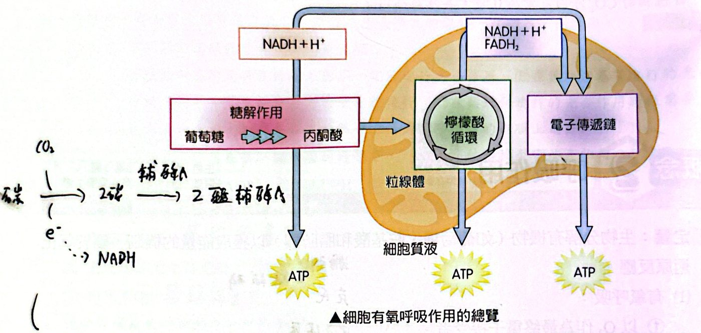
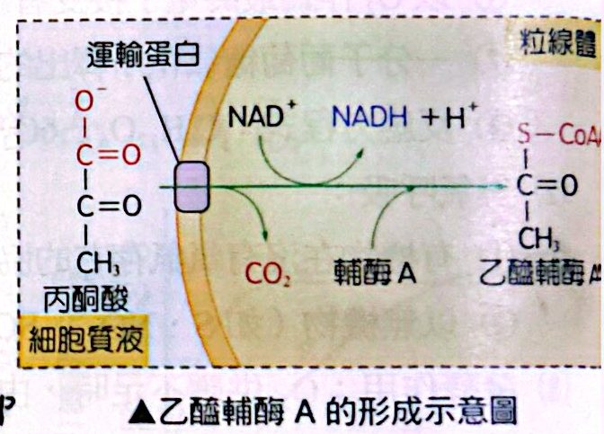
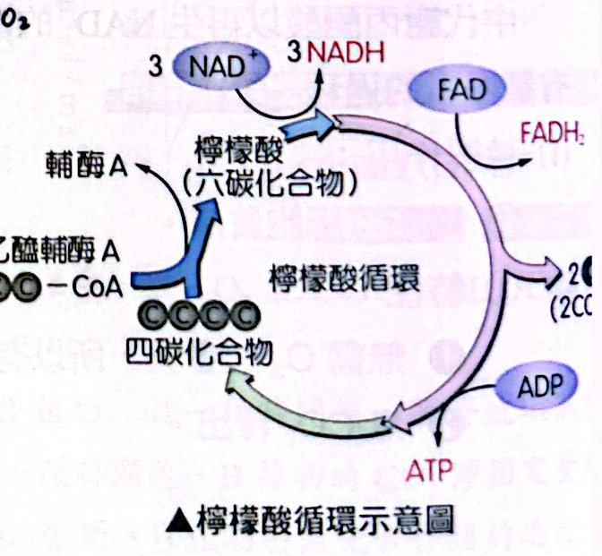
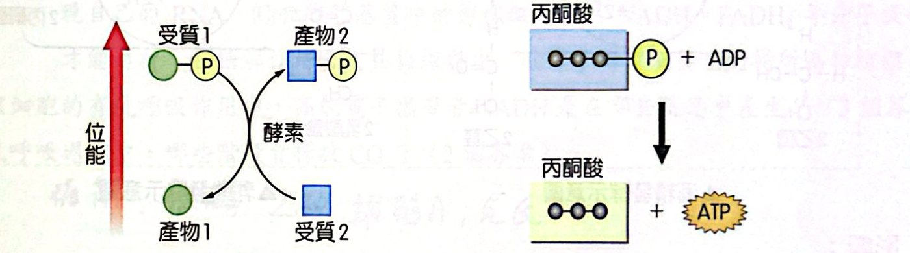
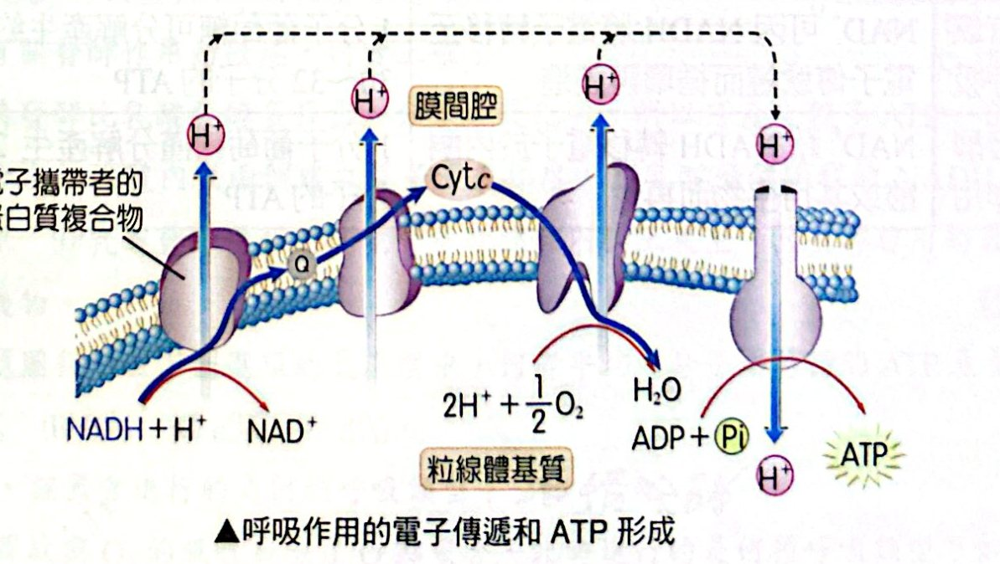
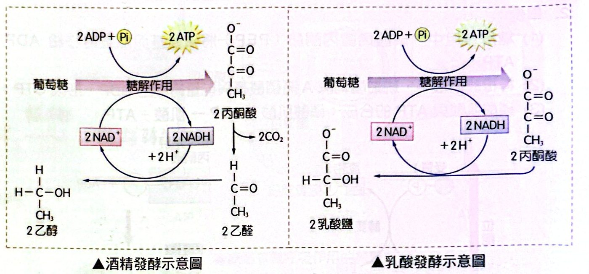

定義：有氧、無氧、發酵
呼吸作用：生物分解有機物（如葡萄糖、胺基酸和脂肪酸）以獲取能量的機制，屬於氧化還原反應。
|
有氧呼吸 |
無氧呼吸 |
發酵作用 |
| 最終電子接受者 |
O₂ |
無機物（如 S、NO₃⁻、SO₄²⁻） |
有機物（丙酮酸或其衍生物） |
| 說明 |
一分子葡萄糖氧化所釋出能量約 40% 用於將 ADP 轉為 ATP；C₆H₁₂O₆ ＋ 6O₂ → 6CO₂ ＋ 6H₂O ＋ 能量 |
有機物在沒有氧氣存在的協助下發生部分分解的過程 |
O₂ 供應不足時，因 NAD⁺、FAD 的供應停止，細胞轉而在細胞質液中代謝丙酮酸以再生 NAD⁺ |
有氧呼吸的過程總覽
四個階段（真核生物）：糖解作用（細胞質液）→ 乙醯輔酶 A 形成（粒線體基質）→ 檸檬酸循環（粒線體基質）→ 電子傳遞鏈與氧化磷酸化（粒線體內膜）。
| 階段 |
場所 |
需 O₂？ |
釋出 CO₂？ |
重點產物 |
| 糖解作用 |
細胞質液 |
否（有氧、無氧都可） |
否 |
淨 2 ATP、2 NADH、2 丙酮酸 |
| 乙醯輔酶 A 形成 |
粒線體基質 |
否（直接） |
是（第一個 CO₂） |
每分子丙酮酸：1 NADH、1 CO₂、1 乙醯輔酶 A |
| 檸檬酸循環 |
粒線體基質 |
否（直接） |
是 |
每分子乙醯輔酶 A：3 NADH、1 FADH₂、1 ATP、2 CO₂ |
| 電子傳遞鏈＋氧化磷酸化 |
粒線體內膜 |
是（O₂ 為最終電子接受者） |
否 |
生成大量 ATP 與 H₂O |

細胞有氧呼吸作用的總覽
1. 糖解作用
- 場所：細胞質液。
- 特性：①無需 O₂ 的參與，所以有氧、無氧的狀態下均可進行；②無 CO₂ 釋出。
- ATP 的得失：
- 能量投資期：1 分子葡萄糖消耗掉 2 分子 ATP；
- 能量收益期：藉受質層次磷酸化獲得 4 分子 ATP 及 2 分子 NADH；
- 淨反應：葡萄糖 → 2 丙酮酸 ＋ 2H₂O，2ADP ＋ 2Pi → 2ATP（淨），2NAD⁺ ＋ 4H⁺ ＋ 4e⁻ → 2NADH ＋ 2H⁺。
- 受質層次磷酸化：化合物（受質）在酵素催化下，將所含的磷酸基與能量直接轉移給 ADP，使 ATP 形成。
2. 乙醯輔酶 A 的形成
- 場所：粒線體基質。由粒線體膜上的運輸蛋白將細胞質液中的丙酮酸運入粒線體基質中。
- 反應：丙酮酸（3C）＋ NAD⁺ ＋ 輔酶 A → 乙醯輔酶 A（2C）＋ NADH ＋ CO₂。
- 釋出呼吸作用中第一個 CO₂ 和 1 分子的 NADH。

乙醯輔酶 A 的形成
3. 檸檬酸循環（克氏循環）
- 場所：粒線體基質。
- 產物（以 1 分子乙醯輔酶 A 計算）：3 分子 NADH、1 分子 FADH₂、1 分子 ATP、2 分子 CO₂。
- 1953 年，英國生物學家克列伯（Hans Krebs）以「檸檬酸循環」獲得諾貝爾生理醫學獎。
- 過程：乙醯輔酶 A（2C）與四碳化合物結合成檸檬酸（六碳），經一系列反應釋出 2 個 CO₂，再生成四碳化合物。

檸檬酸循環

受質層次磷酸化反應（含 PEP 將能量轉移給 ADP 形成 ATP）
4. 電子傳遞鏈和 ATP 的形成
- 場所：粒線體內膜。
- NADH 和 FADH₂ 提供電子給電子傳遞鏈，到達鏈的盡頭時，O₂ 接收電子並與 H⁺ 結合生成水（O₂ 為最終電子接受者）。
- 電子傳遞過程中，所釋出的能量藉由氧化磷酸化生成 ATP。

呼吸作用的電子傳遞和 ATP 形成
發酵作用
過程：①糖解作用：葡萄糖 → 2 丙酮酸 ＋ 2H₂O，2ADP ＋ 2Pi → 2ATP；②發酵作用：NAD⁺ 藉 NADH 轉移電子於丙酮酸或其衍生物而再生（讓糖解作用能持續進行）。依丙酮酸形成的不同代謝產物，分為：
|
酒精發酵 |
乳酸發酵 |
| 發生生物 |
細菌、酵母菌；高等生物見於植物的根、莖、種子 |
部分菌類；高等動物的骨骼肌持續收縮而缺氧時 |
| 反應 |
丙酮酸 → 乙醛（放出 CO₂）→ 乙醇 |
丙酮酸 → 乳酸 |
| 有無 CO₂ |
有 |
無 |
| ATP |
淨 2 ATP |
淨 2 ATP |

酒精發酵與乳酸發酵示意圖
影響：
- 植物：酒精累積於細胞中，將抑制新陳代謝，致使種子無法萌發；
- 動物：骨骼肌的 ATP 產量不足，造成肌肉疲勞；乳酸則使肌肉無法靈活運動（急性肌肉酸痛）。
有氧呼吸 vs 發酵作用
|
NAD⁺ 的再生 |
ATP 的產量 |
主要最終產物 |
| 有氧呼吸 |
NAD⁺ 因 NADH 將電子轉移至電子傳遞鏈而循環再製造 |
1 分子葡萄糖約 30～32 ATP |
無機物（CO₂、H₂O） |
| 發酵作用 |
NAD⁺ 藉 NADH 轉移電子於丙酮酸或其衍生物而再生 |
1 分子葡萄糖僅 2 ATP |
有機物（乙醇或乳酸） |
經典演練
呼吸作用是細胞分解葡萄糖等養分，釋出蘊藏在分子中的能量以合成 ATP 的過程。一般生物的呼吸作用必須在有氧的情況下進行，因此稱為有氧呼吸。真核生物的有氧呼吸依序發生於細胞質液與粒線體，葡萄糖在一連串的反應下被分解為 CO₂ 與 H₂O，同時釋出的能量可大量生成 ATP 與 H₂O。
有關生物的有氧呼吸，下列敘述何者正確？
(A) 所有生物細胞的有氧呼吸都是發生於細胞質液和粒線體 (B) 動物細胞的丙酮酸在細胞質液中產生，在粒線體中被澈底氧化分解 (C) 所有的植物細胞在有氧時進行有氧呼吸，無氧時進行發酵作用 (D) 葡萄糖分解至丙酮酸的過程中，其反應速率不受溫度的影響
看答案與詳解收起
答(B)
解
- (A) ✗ 原核生物沒有粒線體。
- (B) ○ 糖解作用在細胞質液產生丙酮酸，之後進入粒線體徹底分解。
- (C) ✗ 「所有」太絕對：植物細胞在有氧時是進行有氧呼吸沒錯，但無氧時不一定都發酵（有些細胞無氧時直接受損，或進行其他代謝），不能一概而論。
- (D) ✗ 糖解作用由酵素催化，會受溫度影響。
下列對於粒線體的敘述，哪些正確？（多選）
(A) 粒線體擁有自己的 DNA，不需依賴細胞核 DNA 所表現的蛋白質 (B) 粒線體可表現自己的 RNA (C) 粒線體基質中的檸檬酸循環需 NADH、FADH₂ 等分子提供能量才能進行 (D) 糖解作用發生在粒線體中 (E) 電子傳遞鏈發生的場所為粒線體內膜
看答案與詳解收起
答(B)(E)
解
- (A) ✗ 粒線體是半自主性胞器，仍需要核 DNA 表現的蛋白質。
- (B) ○ 粒線體有自己的 DNA，可轉錄成自己的 RNA。
- (C) ✗ NADH、FADH₂ 是檸檬酸循環的產物，不是它進行所需的「能量」。
- (D) ✗ 糖解作用在細胞質液。
- (E) ○ 電子傳遞鏈在粒線體內膜。
真核細胞的有氧呼吸作用中，高能電子攜帶者 NADH 是在哪些反應中產生？（3 個答案）
看答案與詳解收起
答糖解作用、丙酮酸 → 乙醯輔酶 A、檸檬酸循環
解三個階段都會產生 NADH：糖解作用（2 NADH）、乙醯輔酶 A 形成（每丙酮酸 1 NADH）、檸檬酸循環（每乙醯輔酶 A 3 NADH）。電子傳遞鏈是消耗 NADH，不是產生。
有氧呼吸過程中，哪些階段會釋放 CO₂？（2 個答案）
看答案與詳解收起
答乙醯輔酶 A 的形成、檸檬酸循環
有些細胞缺氧時，可透過發酵作用再生 NAD⁺，以維持細胞的正常運作。發酵作用類型很多，最常見的是酒精發酵與乳酸發酵，其中酒精發酵可見於酵母菌與缺氧的植物細胞中；乳酸發酵可見於乳酸菌與動物體缺氧的骨骼肌細胞。下圖為某種植物的非綠色器官在不同氧濃度下，CO₂ 釋放量與 O₂ 吸收量的變化（O₂ 濃度為 0 時只有 CO₂ 釋放；隨 O₂ 濃度增加，CO₂ 釋放量先下降到 P 點、再上升，O₂ 吸收量持續上升，兩曲線在 Q 點重合）。
下列有關發酵作用的敘述，何者正確？
(A) 酒精發酵比乳酸發酵多釋出一分子二氧化碳，所以可產生較多 ATP (B) 酒精發酵過程會在粒線體內膜兩側建立質子濃度梯度 (C) 乳酸發酵過程的 NADH 會將丙酮酸還原 (D) 乳酸發酵過程的能量會在粒線體內膜上產生 (E) 發酵作用的最終產物皆為有機物
看答案與詳解收起
答(C)
解
- (A) ✗ 兩種發酵的 ATP 都是淨 2 個，與 CO₂ 多少無關。
- (B)(D) ✗ 發酵全程在細胞質液，與粒線體無關。
- (C) ○ NADH 把電子交給丙酮酸，使丙酮酸還原成乳酸，同時再生 NAD⁺。
- (E) ✗ 酒精發酵除了酒精（有機物）還有 CO₂（無機物）。
參考上題圖判斷，在下列選項的氧濃度中，何者平均一分子葡萄糖的 ATP 產量最低？
(A) a% (B) b% (C) c% (D) d%
看答案與詳解收起
答(A)
解在 a%（氧濃度最低）時，CO₂ 釋放遠多於 O₂ 吸收，代表主要靠發酵（無氧），而發酵每分子葡萄糖只產 2 ATP，ATP 產量最低；氧濃度愈高（b、c、d）有氧呼吸比例愈高，平均 ATP 產量愈高。
O₂ 濃度為 0 時，該器官進行的是何種呼吸類型？
看答案與詳解收起
答酒精發酵（無氧呼吸）
解O₂ 濃度為 0 時只有 CO₂ 釋放、沒有 O₂ 吸收，且植物產生 CO₂ ⇒ 酒精發酵。
該器官 CO₂ 的釋放與 O₂ 的吸收曲線在 Q 點重合，此時進行的是何種呼吸類型？如何判定？
看答案與詳解收起
答有氧呼吸；因為 CO₂ 釋放量＝O₂ 吸收量（1 : 1）
解有氧呼吸（以葡萄糖為材料）消耗的 O₂ 與釋出的 CO₂ 比為 1 : 1；若同時有發酵，CO₂ 會多於 O₂。兩曲線重合，表示已完全是有氧呼吸。